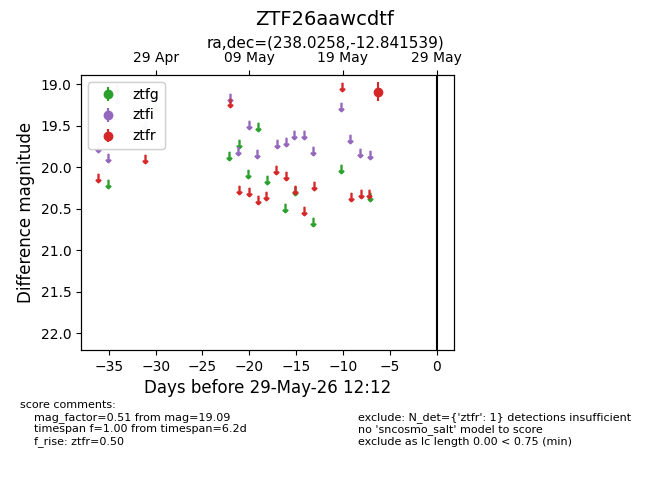
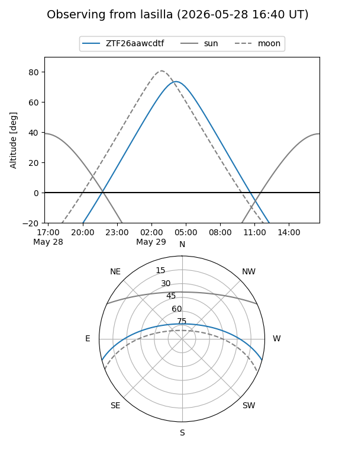
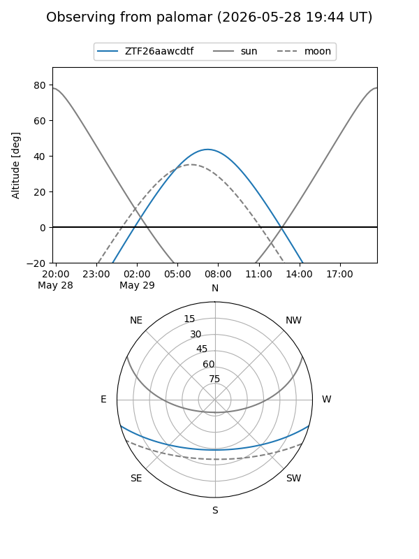

ZTF26aawcdtf
Target ZTF26aawcdtf at 2026-05-29 12:16
Aliases and brokers:
lsst-FINK: link
lsst-Lasair: link
lsst-ALeRCE: link
ztf-FINK: link
ztf-Lasair: link
ztf-ALeRCE: link
alt names
ZTF26aawcdtf (ztf,fink_ztf)
Coordinates:
equatorial (ra, dec) = 238.0258,-12.84154
equatorial (HMS+DMS) = 15:52:06.18,-12:50:29.54
galactic (l, b) = (356.4516,+30.69369)
Flags:
Photometry:
last ztfr=19.09
1 ztfr detections
Lightcurve

Visibility


Additional plots